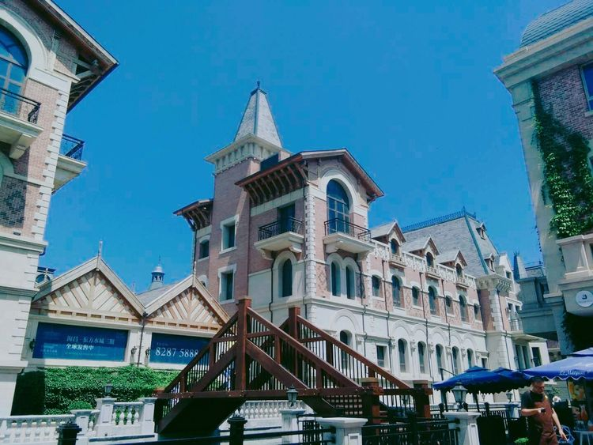

一天，一地，一水，一城，构成了大连这座城市。
到大连给我们的印象就是青岛的复制版，简直就是孪生兄弟。
大连的便利店超市叫快客，我们是友客；他们有五一广场，我们是五四广场；他们大型购物商场叫凯丹，我们是凯德；他们有攸一瑜伽，我们是蝉一瑜伽。
一个充满异国风情的地方 白天可以坐坐船喝喝咖啡 夜晚更适合欣赏美景。
假装自己在国外。
看看书，聊聊天，发会小呆儿。里边满满的文艺气息和浓浓的咖啡香气。
十五库艺术园 -- 刚看到大门的时候确实有点失望，但是到里边之后发现还是不错滴。
可以在上边欣赏着海景，吹着海风，吃一顿美美的下午茶，感觉甚是美哉。
海景大餐。
跟青岛的劈柴院差不多，不过没有劈柴院大，很短，很快就走完了，人暴多。
这两天为了准备啤酒节，大连的星海广场也都在布置场地。里边也没有进去，在外边的广场上游荡了一会儿，景色是很美，可是就是太ye！ye！ye！
红配红。
在码头旁边的小餐馆吃的当地特色海鲜焖子。
世界末日。
大连的汽水跟我们小时候喝的香槟一个味儿。
为了做个电车，我们也是尽力了，坐了两天才坐上。第一天的情景是我们去那一方向，哪一方不来车，对面方向都是车，然后就放弃了。第二天依然情迷于小电车，接着步行了半小时坐了两站，被告知到终点站了该下车了。
大连你好，大连再见。